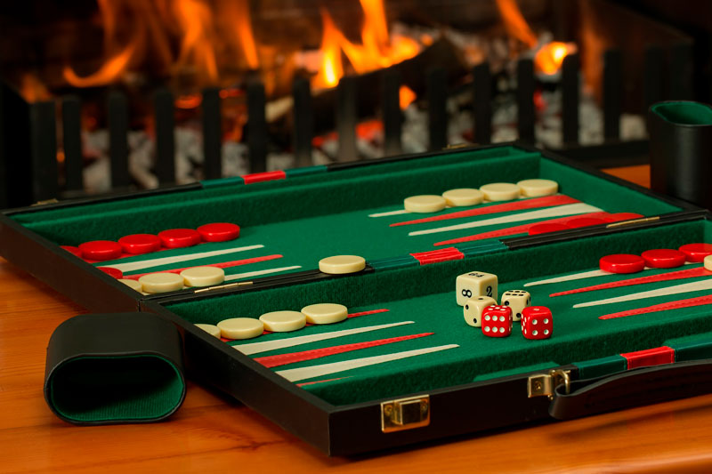

Brætspilscafé

Foran FabLab, Seebaldsgade
13. december kl. 14 - 17
Gratis
34/80
Beskrivelse
Mangler du noget at lave en tirsdag aften? Trænger du måske til at banke dine studiekammerater i et godt spil ludo, skak, matador eller noget helt andet? Så kom til brætspilscafé på UCL! Vi har 50+ forskellige brætspil, som i har muligheden for at slå jer løs i. Det er helt gratis at deltage, og vi disker ovenikøbet også op med lidt drikkelse til at slukke tørsten, selvfølgelig til SU-venlige priser (Te og kaffe er GRATIS). Få fat på dine venner og få dem med, ellers kan du også selv møde op. Der er altid plads til en ekstra spiller.
Konkurrencer
For at gøre det lidt mere spændende, har vi også sørget for at der vil være lidt forskellige konkurrencer i diverse spil. Her har du mulighed for at vinde fede præmier, som f.eks. drikkevare og andet.